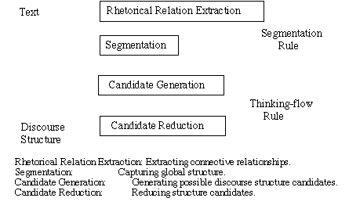

(50) An Experimental Discourse Analyzer
Machine: PSI-II
Environment: SIMPOS
Language: ESP
Source Code: 1.0 MB
Documents: None
Overview
An experimental system analyzing discourse structures for Japanese
text.
Configuration

Function
For building a text processing system, it is important to accumulate
linguistic knowledge for discourse analysis of text. In this system, a
discourse structure, represented as a binary tree, is analyzed based
on the following linguistic knowledge.
- Segmentation Rule
- Capturing the relations between Japanese surface rhetorical
expressions and the global constraints on the discourse structure.
- Thinking-flow Rule
- Expressing local constraints on the sequence of rhetorical
relations and sub-structures.
Reference
- Sumita, K., et al., "A Discourse Structure Analyzer for Japanese
Text", Proc. Int. Conf. Fifth Generation Computer Systems 1992.
FTP
- An Experimental Discourse Analyzer [345K]

www-admin@icot.or.jp